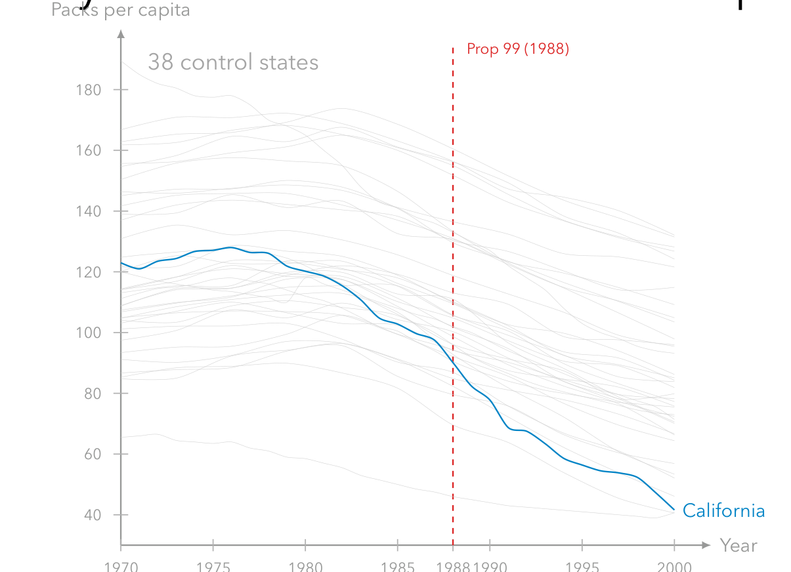
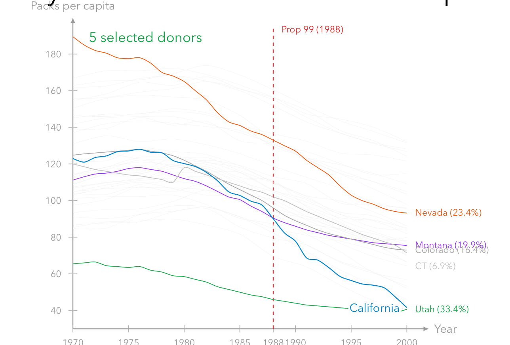
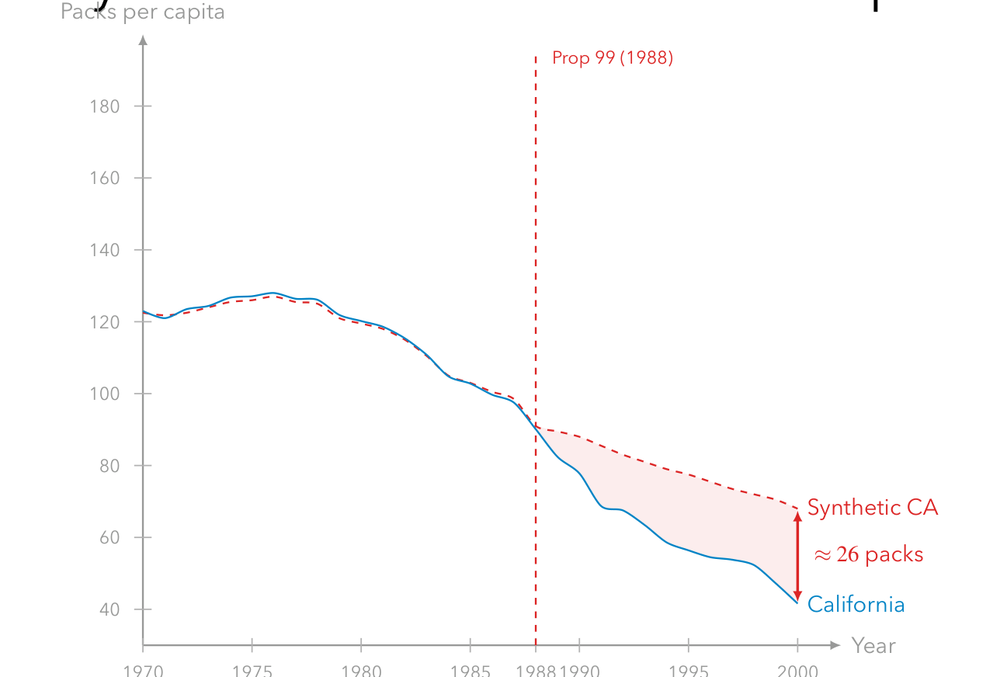
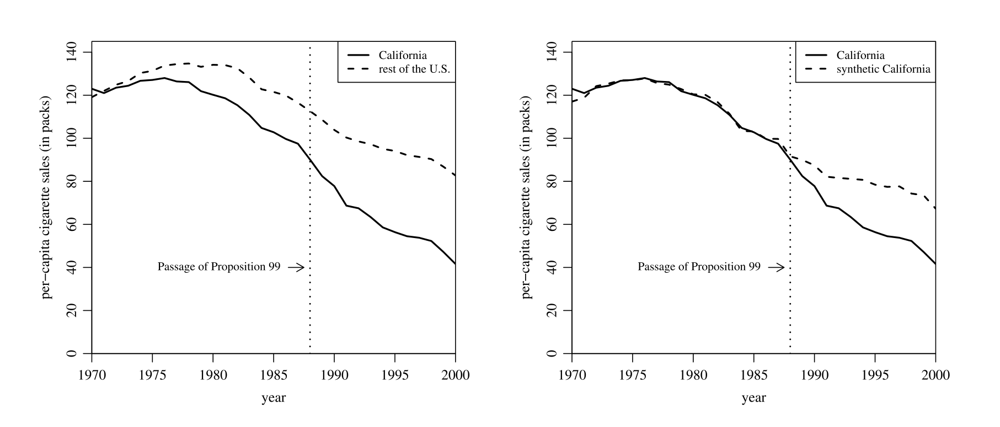
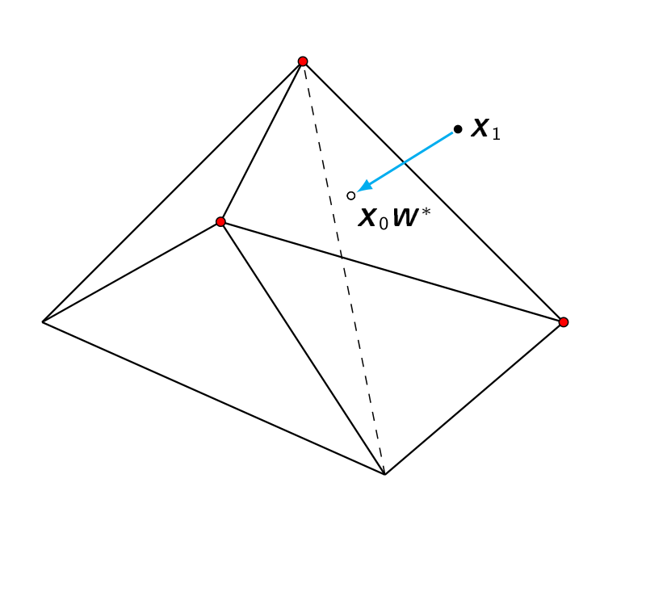
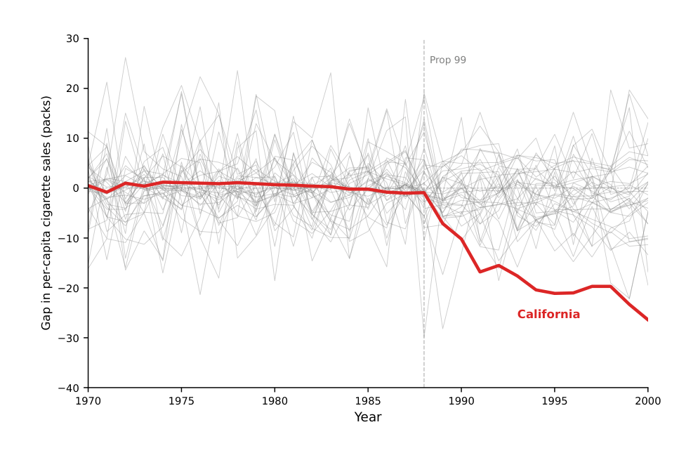

본 포스트는 서울대학교 GSDS Sanghack Lee(이상학) 교수님의 Causal Inference 강의 자료(Synthetic Control Method 편)를 바탕으로, 강의를 처음 듣는 독자도 논리적 흐름을 따라갈 수 있도록 재구성한 것입니다. 원본 슬라이드는 Alberto Abadie, Matthew Blackwell 교수님의 강의 자료를 계보로 하며, Abadie & Gardeazabal (2003, AER), Abadie, Diamond & Hainmueller (2010, JASA), Abadie (2021, JEL), Ben-Michael, Feller & Rothstein (2021, JASA)의 결과를 인용합니다. 앞선 21강 Differences in Differences에서 이어지는 회차이므로, 평행추세 가정과 그 한계를 먼저 읽고 오시면 이 글의 동기가 훨씬 선명해집니다.
한 줄 요약 (TL;DR)
“처치받은 단위가 단 하나라면 비교할 집단을 찾는 대신 만들어 낸다 — 통제 후보들의 볼록 가중평균으로 도플갱어를 합성해서.”
DiD는 처치집단과 통제집단이 각각 여럿이고 둘의 추세가 평행할 때 잘 작동합니다. 그런데 정책을 도입한 것이 단 하나의 주(州)라면, 평행추세를 논할 상대조차 없습니다. 합성통제법(Synthetic Control Method, SCM)의 답은 개별 통제 후보 중 하나를 고르는 것이 아니라, 여러 후보를 사전 시점의 결과 경로와 공변량이 처치 단위와 맞아떨어지도록 가중결합해 가상의 단위를 만드는 것입니다. 평행추세 대신 상호작용 요인 모형(interactive factor model) 구조에 기대므로 시간 가변 교란까지 구조적으로 허용하고, 가중치를 볼록 결합(\(w_j \ge 0\), \(\sum_j w_j = 1\))으로 제약해 외삽을 원천 차단합니다. 대가로 적합은 불완전해질 수 있고, 그 불완전함이 곧 편향의 원천이 됩니다 — 이를 결과 모형으로 메우는 것이 증강 SCM이며, 처치 단위가 하나뿐이라 불가능한 고전적 추론은 플라세보 순열 검정이 대신합니다.
1. DiD에서 합성통제로 (From DiD to Synthetic Controls)
이번 회차의 출발점은 앞 회차에서 다룬 이중차분법이 적용될 수 없는 상황입니다.
- DiD는 두 집단과 평행추세가 있을 때 잘 작동합니다.
- 그런데 처치 단위가 단 하나라면 어떨까요? (예: 어떤 정책을 도입한 단일 국가, 단일 주)
- 어떤 통제 단위와 비교해야 할까요? 개별 통제 단위 어느 것도 처치 단위와 비교 가능하지 않을 수 있습니다.
- 합성통제법의 답: 여러 통제 단위를 최적으로 가중결합하여 반사실을 근사하는 하나의 가상 단위를 만들어 냅니다.
2. 합성통제 만들기: California Prop 99 (Building a Synthetic Control)
대표적 응용은 1988년 캘리포니아의 담배 규제 정책인 Proposition 99의 효과 분석(Abadie, Diamond & Hainmueller, 2010, JASA)입니다. 합성통제가 어떻게 만들어지는지를 세 단계로 따라가 보겠습니다.
2.1 ① 문제: 38개 통제 후보 중 무엇을 고를 것인가

2.2 ② 해법: 소수의 통제 후보에 가중치를 부여

2.3 ③ 결과: 합성 캘리포니아와의 격차

- 정책 시행 이전: 실제 California와 synthetic California가 거의 일치 → 좋은 사전 적합(pre-treatment fit).
- 정책 시행 이후: 두 선이 벌어진 만큼이 정책의 인과효과 추정치.
3. 합성통제의 기본 아이디어 (Synthetic Controls)
- Abadie and Gardeazabal (2003)은 “정량적 사례 연구(quantitative case studies)”를 위한 DiD류 접근으로 SCM을 제안했습니다.
- 응용 상황: 단일 국가/주에서, 한 시점에 일어난 개입(intervention)의 효과.
- 기본 구도: 처치집단은 1개, 통제 후보(donor pool)는 여러 개.
- 처치집단의 시계열 결과를 통제집단과 비교합니다.
- 문제: 어떤 통제집단을 써야 하는가? 가능한 선택지가 많고, 각각이 처치집단과 비교 가능하지 않을 수 있습니다.
- 해법: 여러 통제 후보의 볼록 결합(convex combination)으로 “합성 통제집단”을 만듭니다. 가중치는 사전 시점의 처치-합성 간 차이를 최소화하도록 선택합니다.
4. 사례 연구: California Proposition 99
앞 절의 그림들이 어떤 연구에서 나온 것인지 구체적으로 정리합니다.
- 정책: 1988년 캘리포니아는 Proposition 99를 통과시켜 담배 한 갑당 $0.25의 세금을 부과했습니다. 당시로서는 미국 주 단위 최대 규모의 인상이었습니다.
- 목표: 1인당 담배 판매량에 미친 효과를 추정하는 것.
- 난점: 캘리포니아와 비교할 만한 단일 주가 존재하지 않습니다.
- SCM의 해법: 38개 통제 주의 가중결합으로 “합성 캘리포니아”를 구성합니다.
- 주요 기부 단위(donor): Utah (33.4%), Nevada (23.4%), Montana (19.9%), Colorado (16.4%), …
- 가중치 선택 기준: 1988년 이전의 담배 판매량과 함께 소득, 맥주 소비량, 소매 가격, 15–24세 인구 비율을 함께 맞추도록 선택했습니다.
- 결과: 2000년 기준 캘리포니아의 1인당 판매량은 합성 캘리포니아보다 약 26갑 낮았습니다.
5. 개입 연구의 설정 (Intervention Study)
표기를 세웁니다.
| 시점 | \(1\) | \(2\) | \(\cdots\) | \(T_0\) | \(T_0+1\) | \(\cdots\) | \(T\) |
|---|---|---|---|---|---|---|---|
| 처치 단위 (\(i=1\)) | 0 | 0 | 0 | 0 | 1 | 1 | 1 |
| 통제 후보 (\(i=2,\dots,J+1\)) | 0 | 0 | 0 | 0 | 0 | 0 | 0 |
- 처치 구조: 모든 단위가 \(T_0\) 시점까지 미처치. 단위 1만 \(T_0+1\) 이후부터 \(T\)까지 처치.
- 잠재적 결과: \(Y_{it}(x)\)는 단위 \(i\)가 시점 \(t\)에서 처치 상태 \(x \in \{0,1\}\)에 있었을 때의 결과이며, 우리는 \(Y_{it} = Y_{it}(X_{it})\)를 관측합니다.
- \(Z_i\)는 단위 \(i\)의 \(r \times 1\) 사전(pretreatment) 공변량 벡터입니다.
- 처치효과: \(\tau_{1t} = Y_{1t}(1) - Y_{1t}(0)\), \(\;t > T_0\)
- 목표: 처치 이후 시점들의 효과 \((\tau_{1,T_0+1}, \dots, \tau_{1,T})\)를 추정.
6. 사라진 반사실 (Missing Counterfactuals)
일치성에 의해, 처치 이후(\(t > T_0\))에는
\[ \tau_{1t} = Y_{1t}(1) - Y_{1t}(0) = Y_{1t} - Y_{1t}(0) \]
- \(Y_{1t}(1) = Y_{1t}\)는 관측되지만, \(Y_{1t}(0)\)(처치 단위가 처치받지 않았다면의 결과)는 미관측 반사실입니다. 이것을 대체(impute)해야 합니다.
6.1 합성통제의 가중치 선택
가중치 \((w_2, \dots, w_{J+1})'\)를 다음 조건으로 선택합니다.
- 볼록 제약(convexity): \(w_j \ge 0\) 이고 \(\sum_j w_j = 1\)
- 모든 사전 시점 \(t \le T_0\)에 대해 다음 두 거리를 최소화:
\[ \left\| Y_{1t} - \sum_{j=2}^{J+1} w_j Y_{jt} \right\|, \qquad \left\| Z_1 - \sum_{j=2}^{J+1} w_j Z_j \right\| \]
- 즉, 사전 결과 경로와 공변량 모두에서 처치 단위를 잘 모사하는 가중치를 찾습니다.
- 이 두 목적은 예측변수 중요도 가중치(predictor importance weights) \(V\)를 사용한 가중 노름(weighted norm)으로 결합됩니다. \(V\)를 어떻게 고르느냐가 결과를 좌우할 수 있는데, 이 문제는 부록 B에서 따로 다룹니다.
- 가중치가 너무 분산되지 않도록 벌점(penalty)을 추가할 수도 있습니다.
6.2 기대 효과
- 우리가 바라는 것은, 처치 이후(\(t > T_0\))에 다음 근사가 성립하는 것입니다.
\[ \sum_{j=2}^{J+1} w_j Y_{jt} \approx Y_{1t}(0) \]
- 핵심 가정: “사전 시점에서 합성 통제가 처치 단위를 잘 따라갔다면, 사후 시점에서도 (처치가 없었다면의) 반사실을 잘 따라갈 것”이라는 외삽적 신뢰입니다. §8–10은 이 신뢰가 어떤 모형 구조 아래에서 정당화되는지를 다룹니다.
7. 합성통제의 효과 (Without/With Synthetic Controls)

- 왼쪽 (Without): 단순히 “미국 나머지 전체”를 통제집단으로 쓰면 사전 추세부터 캘리포니아와 어긋납니다 → 반사실로 부적합.
- 오른쪽 (With): 합성 캘리포니아는 사전 추세를 정밀하게 재현 → 신뢰할 만한 반사실.
이 대비가 SCM의 존재 이유를 한눈에 보여줍니다.
8. 정당화: 모형 1 — 상호작용 요인 모형 (Interactive Factor Model)
저자들은 SCM에 대해 두 가지 모형 기반 정당화를 제시합니다. 첫 번째는 요인 구조를 가진 모형입니다.
\[ Y_{it}(0) = Z_i' \beta_t + \alpha_i + \delta_t + \lambda_t \mu_i + \varepsilon_{it} \]
- \(\beta_t\): 공변량에 대한 시간 가변 계수.
- \(\alpha_i\): 단위 고정효과.
- \(\delta_t\): 모든 단위에 동일하게 작용하는 공통 시간 충격.
- \(\lambda_t\): \(1 \times F\) 공통 요인(common factors) 벡터 — 관측되지 않는 거시적 충격들.
- \(\mu_i\): \(F \times 1\) 요인 적재(factor loadings) 벡터 — 각 단위가 그 충격에 얼마나 민감한지.
\(\lambda_t \mu_i\) 항이 시간 가변 교란(time-varying confounding)을 구조적으로 허용합니다. 표준 DiD의 고정효과 모형에는 이 항이 없어 시간 불변 교란만 다룰 수 있는 반면, 여기서는 공통 충격이 단위마다 다르게(적재량 \(\mu_i\)만큼) 영향을 주는 상황까지 포괄합니다. SCM이 “평행추세를 가정하지 않는다”고 말할 수 있는 근거가 바로 이 항입니다.
9. 정당화: 모형 2 — 자기회귀 모형 (Autoregressive Model)
두 번째는 고정효과 없이 동적 구조를 갖는 모형입니다.
\[ \begin{aligned} Y_{i,t+1}(0) &= \rho_t Y_{it}(0) + \beta_{t+1}' W_{i,t+1} + u_{i,t+1} \\ W_{i,t+1} &= \gamma_t Y_{it}(0) + \Pi_t W_{it} + v_{i,t+1} \end{aligned} \]
- \(W_{i,t}\): 시간 가변 공변량 벡터.
- \(\rho_t\): 시차 결과에 대한 자기회귀 계수 — 모형 1의 요인 구조를 대신하는 동적 원천입니다.
- \(\beta_{t+1}\): 공변량에 대한 시간 가변 계수 (모형 1의 \(\beta_t\)와 같은 역할).
- \(\gamma_t\): 결과에서 공변량으로 되돌아가는 피드백.
- \(\Pi_t\): 공변량의 자기회귀 행렬.
결과와 공변량이 서로의 시차값에 의존하는 동적 시스템이며, 지속성(persistence)이 요인 구조가 아니라 자기회귀에서 나온다는 점이 모형 1과의 차이입니다.
10. 정당화: SCM의 성질 (SCM Properties)
완벽한 균형 가중치(perfect balancing weights) \((w_2^*, \dots, w_{J+1}^*)\)가 존재하여, 사전 시점들에서 결과와 공변량을 정확히 맞춘다고 가정합니다.
\[ \sum_{j=2}^{J+1} w_j^* Y_{jt} = Y_{1t}, \qquad \sum_{j=2}^{J+1} w_j^* Z_j = Z_1 \]
이 가중치로 만든 사후 반사실 추정량을
\[ \hat{Y}_{1t}(0) = \sum_{j=2}^{J+1} w_j^* Y_{jt} \quad (\text{사후 시점}) \]
라 하면, 두 모형 아래에서 다음 성질이 성립합니다.
모형 1 아래: 사전 기간이 길어질수록 추정이 좋아집니다. \[ \hat{Y}_{1t}(0) \to Y_{1t}(0) \quad \text{as } T_0 \to \infty \] 사전 시점 \(T_0\)가 늘어날수록, 요인 적재 \(\mu_i\)의 균형이 점근적으로 맞춰지면서 편향이 사라집니다.
모형 2 아래: 단 한 시점의 사전 정보만으로도 불편(unbiased)입니다. \[ E[\hat{Y}_{1t}(0)] = E[Y_{1t}(0)] \]
두 성질 모두 “완벽한 사전 적합이 존재한다”는 전제 위에서만 성립한다는 점을 기억해 둘 필요가 있습니다. 실제로는 적합이 불완전하기 마련이고, 그때 무슨 일이 일어나는지는 §15에서 다룹니다.
11. 볼록성: 외삽 없음 (Convexity: No Extrapolation)
SCM이 가중치를 볼록 결합(\(w_j \ge 0\), 합이 1)으로 제약하는 데에는 여러 실질적 이점이 있습니다.
- 외삽 없음(No extrapolation). SC 추정량은 데이터의 지지집합(support) 밖으로 나가는 외삽을 원천적으로 배제합니다.
캘리포니아의 사전 흡연량이 120 packs/capita이고, 모든 기부 후보 주가 60–110 packs/capita 범위에 있다고 해 봅시다.
- SCM: 볼록 가중치로 만들 수 있는 최댓값은 110입니다. 따라서 적합은 반드시 불완전해지고, 그 불완전함이 눈에 보입니다.
- OLS: 어떤 주에 \(w_j = -0.3\) 같은 음수 가중치를 줄 수 있습니다. 가중치 합은 여전히 1이지만, 합성 결과는 관측 범위를 한참 벗어난 값이 될 수 있습니다. 그리고 이 외삽은 드러나지 않습니다 — 연구자조차 자신이 외삽하고 있다는 사실을 모를 수 있습니다.
SCM은 유연성을 내주고 투명성을 얻는 거래를 한 셈입니다. 처치 단위가 기부 후보들의 볼록 껍질 안에 있는지 여부를 언제든 확인할 수 있기 때문입니다.
- 적합의 투명성(Transparency of the fit). 선형 회귀는 통제 단위들이 처치 단위와 완전히 다르더라도 외삽을 통해 반사실을 만들어냅니다. 반면 SC는 처치 단위와 통제 후보들의 볼록 껍질(convex hull) 사이의 실제 불일치를 투명하게 드러냅니다.
- 사양 탐색(specification search)에 대한 안전장치. SC 가중치 계산(설계 단계)에는 사후 결과가 필요 없습니다. 따라서 모든 설계 결정이 결론에 어떤 영향을 줄지 모르는 상태에서 내려지므로, 결과를 유리하게 보이도록 모형을 고르는 편향을 막습니다.
- 희소성(Sparsity). SC 가중치는 희소(sparse)합니다. 따라서 반사실 추정의 본질을 정밀하게 해석할 수 있습니다 (어떤 통제 단위들이 얼마만큼 기여했는지 명확함).
12. 희소성과 기하학적 직관 (Sparsity and Geometric Intuition)

- \(X_1\): 처치 단위의 특성 벡터.
- \(X_0 W^*\): 통제 후보들의 가중평균 (합성 통제).
- 희소성: 대부분의 \(w_j\)가 정확히 0이 됩니다. Prop 99 사례에서 38개 주 중 5개만 양의 가중치를 받았던 것이 그 예입니다. 결과적으로 “어떤 단위들이 반사실을 구성했는가”를 정확히 말할 수 있습니다.
- 안전장치: 모든 가중치 결정이 사후 데이터 없이 이루어지므로, 사양 탐색으로부터 보호받습니다.
13. 실무적 고려사항 (Practical Concerns)
- 과적합(overfitting)과 보간 편향(interpolation bias) 위험: 사전 기간 \(T_0\)이 작고, 통제 후보 수 \(J\)가 크며, 노이즈가 큰 상황은 위험합니다. 이를 줄이려면 처치 단위와 유사한 단위들로 donor pool을 제한하는 것이 권장됩니다.
- 간섭(interference) 금지: 기부 단위들은 처치의 영향을 받지 않아야 합니다. 예를 들어 캘리포니아의 금연 정책이 인접 주의 담배 소비에 파급된다면(구매지 이동 등), 그 주는 기부 후보에서 제외해야 합니다. 파급이 있는 단위를 반사실 구성에 쓰면 반사실 자체가 오염됩니다.
- 음의 가중치 허용: 합성 통제를 미노출 단위들의 볼록 결합으로 정의하지만, 외삽을 허용하는 대가로 음수 가중치나 1보다 큰 가중치를 사용할 수도 있습니다 (이 경우 §11의 “외삽 없음” 장점은 포기하게 됩니다).
- 볼록성의 대가: 볼록 가중치는 유연성을 제한합니다. 처치 단위가 통제 단위들의 볼록 껍질 밖에 있으면 사전 결과를 완벽히 맞추지 못할 수 있습니다. 그러나 이는 해석 가능성과 강건성을 지키기 위한 의도적 거래입니다.
- \(N = 1\)에서의 추론: 처치 단위가 하나뿐이므로 통상적 표준오차를 쓸 수 없습니다. 대신 플라세보 검정을 사용합니다 (§14).
14. 플라세보 검정을 통한 추론 (Inference via Placebo Tests)
- 처치 단위가 \(N = 1\)이면 표본추출에 기반한 고전적 추론이 불가능합니다.
- 핵심 아이디어: 각 통제 주를 마치 처치받은 것처럼 취급해 SCM을 반복 적용합니다.
- 38개 통제 주 각각에 대해 합성 통제를 만들고 “플라세보 효과”를 추정합니다.
- SCM이 잘 작동한다면, 실제로는 처치가 없었으므로 대부분의 플라세보 효과는 0 근처에 있어야 합니다.
- 논리: 이는 본질적으로 순열/무작위화 추론(permutation/randomization inference)입니다.
- 효과가 없다는 귀무가설 아래에서라면, 캘리포니아의 격차는 플라세보 격차들의 분포에서 나온 평범한 한 표본처럼 보여야 합니다.
- 캘리포니아의 격차가 유별나게 크다면, 실제 효과가 있다는 증거가 됩니다.
- “p-값”: 캘리포니아의 격차 이상으로 큰 플라세보 격차의 비율로 계산합니다. Abadie et al. (2010)에서는 34개 주 중 단 1개만이 더 큰 격차를 보여 \(p \approx 0.03\)이었습니다.

- 정교화: 사전 적합이 나쁜(사전 RMSPE가 큰) 주들은 플라세보 격차 자체가 노이즈로 가득해 정보를 주지 못하므로, 비교 대상에서 제외하는 것이 일반적입니다.
15. 불완전한 사전 적합이 편향을 낳는 이유 (Why Imperfect Pre-Treatment Fit Causes Bias)
§10의 성질들은 “완벽한 균형 가중치가 존재한다”는 전제 위에 있었습니다. 그 전제가 깨지면 무슨 일이 일어나는지, 모형 1을 통해 따져 보겠습니다.
모형 1을 다시 적으면 \(Y_{it}(0) = Z_i' \beta_t + \alpha_i + \delta_t + \lambda_t \mu_i + \varepsilon_{it}\)입니다.
- 적합이 완벽하다면, 즉 모든 \(t \le T_0\)에서 \(\sum_j w_j Y_{jt} = Y_{1t}\)라면, 요인 적재도 근사적으로 맞춰집니다: \(\sum_j w_j \mu_j \approx \mu_1\).
- 적합이 불완전하다면, 어떤 \(t \le T_0\)에서 \(\sum_j w_j Y_{jt} \ne Y_{1t}\)이고, 따라서 \(\sum_j w_j \mu_j \ne \mu_1\)입니다 — 요인 적재가 맞지 않습니다.
- 사후 시점에는 공통 요인 \(\lambda_t\)가 이 불일치를 체계적인 격차로 증폭시킵니다.
\[ \sum_j w_j Y_{jt}(0) - Y_{1t}(0) \approx \lambda_t \left( \sum_j w_j \mu_j - \mu_1 \right) \ne 0 \]
- 다른 항들(\(Z_i'\beta_t\), \(\alpha_i\), \(\delta_t\))은 예측변수 균형에 의해 상쇄되고, \(\varepsilon_{it}\)는 평균적으로 0이므로 요인 항만 남습니다.
- 직관: 합성 통제가 처치 단위의 거시 충격 반응 패턴을 재현하지 못하면, 사후 예측이 시간이 갈수록 체계적으로 어긋납니다. 노이즈가 아니라 방향성 있는 표류(drift)라는 점이 중요합니다.
- 처치 단위가 기부 후보들의 볼록 껍질 밖에 있을 때 특히 문제가 됩니다 — §12의 그림이 보여준 바로 그 상황입니다.
16. 편향 보정: 증강 SCM (Bias Correction: Augmented SCM)
- 문제: 앞 절에서 본 대로, 사전 적합(pre-treatment fit)이 불완전하면 SCM에 유의한 편향이 생깁니다.
- 해법 (Augmented SCM, Ben-Michael, Feller & Rothstein, 2021, JASA): 결과 모형으로 이 잔여 불일치를 보정합니다.
먼저 \(Y_{it}(0) = m_{it} + \varepsilon_{it}\)로 분해하고, 통제 단위들만으로(\(j = 2, \dots, J+1\)) 회귀를 적합해 예측값 \(\hat{m}_{it}\)를 얻습니다 (처치 단위 \(i=1\)에 대한 예측값 \(\hat{m}_{1t}\)도 이 모형으로 산출합니다). 증강 추정량은
\[ \hat{Y}^{\text{aug}}_{1t}(0) = \underbrace{\sum_{j=2}^{J+1} w_j Y_{jt}}_{\text{SC 추정치}} + \underbrace{\left( \hat{m}_{1t} - \sum_{j=2}^{J+1} w_j \hat{m}_{jt} \right)}_{\text{편향 보정항}} = \underbrace{\hat{m}_{1t}}_{\text{결과 모형}} + \underbrace{\sum_{j=2}^{J+1} w_j (Y_{jt} - \hat{m}_{jt})}_{\text{SC 가중 잔차}} \]
- 해석: 두 번째 표현이 직관적입니다. 회귀 예측값 \(\hat{m}_{1t}\)를 기준선으로 삼고, 거기에 통제 후보들의 잔차(residual) \(Y_{jt} - \hat{m}_{jt}\)를 SC 가중치로 결합하여 보정합니다.
- 즉, 순수 SCM의 가중평균에 SC가 미처 맞추지 못한 사전 적합 격차(\(\hat{m}_{1t} - \sum_j w_j \hat{m}_{jt}\))를 더해 줍니다.
증강 추정량은 SC 가중치가 근사적으로 옳거나, 결과 모형 \(\hat{m}_{it}\)가 근사적으로 옳거나 — 둘 중 하나만 맞아도 일치성을 가집니다. 처치효과 추정에서의 AIPW, 그리고 21강 Differences in Differences의 이중 강건 DiD와 정확히 같은 구조입니다. 첫 번째 표현식을 보면 SC 추정치가 옳을 때 보정항이 0에 가까워지고, 두 번째 표현식을 보면 결과 모형이 옳을 때 가중 잔차가 0에 가까워짐을 알 수 있습니다.
- 공변량도 비교적 쉽게 추가할 수 있습니다.
17. 논의: 강점과 한계 (Discussion: Strengths and Limitations)
합성통제법은 정책 개입 및 관심 사건의 효과 추정에 많은 실질적 이점을 제공합니다. 다만 다른 모든 통계 절차와 마찬가지로, 결과의 신뢰성은 방법 적용의 엄밀함과 맥락 · 데이터 요건이 실제 응용에서 충족되는지에 결정적으로 달려 있습니다.
| 강점 (Strengths) | 한계 (Limitations) |
|---|---|
| 투명성 — 가중치가 명시적이라 어떤 기부 단위가 얼마나 기여했는지 확인 가능 | 좋은 donor pool이 필요 — 유사한 단위들이 있어야 하고 파급효과가 없어야 함 |
| 데이터 주도 — 단일 비교 단위를 연구자가 임의로 고르지 않아도 됨 | 단일 처치 단위 설계 — 처치 단위가 여럿이면 확장이 필요 |
| 평행추세 가정 불필요 — 대신 요인 모형 구조를 사용 | donor pool 구성과 예측변수 선택에 민감 |
| 사전 적합 자체가 신뢰도 진단 도구 역할 | 형식적 추론이 제한적 — 순열 기반이며 표본추출 기반이 아님 |
| 볼록성이 적합을 가로막을 수 있음 — 처치 단위가 이상치일 때 |
- 실증적으로, 경제학자들이 관심을 갖는 많은 사건 · 정책 개입은 집계 수준(aggregate level)에서 일어나 집계 단위 전체에 영향을 미칩니다. SCM은 바로 이런 “하나의 큰 단위” 문제에 자연스럽게 들어맞는 도구입니다 (Abadie, 2021, JEL).
18. 언제 SCM을 쓰는가 (When to Use SCM vs. Alternatives)
- SCM을 쓸 때:
- 처치 단위가 하나(혹은 매우 적고), 통제 후보가 여럿일 때.
- 매칭에 쓸 사전 기간이 충분히 길 때.
- 평행추세는 그럴듯하지 않지만, 요인 모형 구조는 합리적일 때.
- DiD를 고려할 때: 처치 · 통제 단위가 모두 여럿이고 평행추세가 그럴듯할 때.
- SDID(Synthetic DiD)를 고려할 때: 두 방법의 강점을 결합하고 싶을 때 — 특히 패널이 클 때.
- 열린 연구 주제:
- 순열 검정을 넘어서는 형식적 추론 (conformal inference)
- SCM 설정에 대한 민감도 분석
- 합성통제를 활용한 실험 설계
- SCM 추정치의 외적 타당도(external validity)
19. 확장과 최근 동향 (Extensions and Recent Developments)
| 확장 | 문헌 | 요지 |
|---|---|---|
| Augmented SCM | Ben-Michael, Feller & Rothstein (2021, JASA) | 결과 모형으로 편향 보정, 이중 강건성 (§16에서 다룸) |
| Synthetic DiD (SDID) | Arkhangelsky et al. (2021, AER) | 단위 가중치(SCM) + 시간 가중치 + 단위 고정효과(DiD) 결합, 대형 패널에서 타당한 추론 |
| Penalized SCM | Abadie & L’Hour (2021) | \(L_1/L_2\) 벌점으로 엄격한 볼록성을 완화, 정규화된 부분 외삽 허용 |
| Conformal Inference for SCM | Chernozhukov, Wüthrich & Zhu (2021, JASA) | 잔차 순열을 통한 분포 무가정(distribution-free) 예측구간 |
| Matrix Completion | Athey et al. (2021, JASA) | 반사실을 결측 데이터 문제로 보고 저계수(low-rank) 근사로 복원 (부록 A) |
- 이 밖에도 강건 SCM(민감도 분석), 시차 도입(staggered adoption)을 위한 SCM 등이 활발히 연구되고 있습니다.
20. 요약: DiD vs. 합성통제 (Summary: DiD vs. Synthetic Control)
| Difference-in-Differences | Synthetic Control | |
|---|---|---|
| 설정 | 두 집단, 두(혹은 그 이상) 시점 | 처치 단위 1개, 기부 후보 다수 |
| 핵심 가정 | 평행추세 | 사전 적합 (요인 모형) |
| 추정 대상 | ATT (집단 수준) | \(\tau_{1t}\) (단위 수준) |
| 강점 | 단순하고 투명함 | 처치 단위가 하나인 상황을 잘 다룸 |
| 약점 | 비선형 변환에 민감 | 좋은 donor pool이 필요 |
| 확장 | Staggered DiD, Nonlinear DiD | Augmented SCM, Matrix completion |
부록 A. 처치 단위가 여럿일 때로의 일반화 (Generalizing to More Treated Units)
처치 단위 수에 제한 없이 일반화하는 두 가지 추정 방법이 있습니다.
- 상호작용 고정효과(Interactive Fixed Effects, IFE): 모형 1과 같은 \(Y_{it}(0) = Z_i' \beta_t + \alpha_i + \delta_t + \lambda_t \mu_i + \varepsilon_{it}\)를 두고, 가중치를 구하는 대신 IFE를 직접 추정합니다. 반복 절차는 다음과 같습니다.
- IFE 항을 고정된 것으로 보고, 미처치 단위들로 모수 부분을 적합해 새로운 \(\hat{\beta}\)를 얻습니다.
- 공변량 계수를 고정된 것으로 보고, 잔차의 주성분(principal components)으로 IFE 항을 추정합니다.
- 수렴할 때까지 반복합니다.
- 행렬 완성(Matrix Completion, Athey et al., 2021): 통제 잠재결과의 행렬 \(Y(0)\)을 결측 데이터 문제로 봅니다. 관측된 부분을 가장 잘 근사하는 저계수(low-rank) 행렬 \(L\)을 정규화 제약 아래에서 추정합니다 (추천 시스템에서 사용자-아이템 행렬을 채우는 방식과 같은 착상입니다).
부록 B. 예측변수 중요도 가중치 \(V\) (Predictor Importance Weights)
§6.1에서 미뤄 둔 문제입니다. 단위 가중치 \(w\)는 \(V\)-가중 예측변수 불일치를 최소화하도록 결정됩니다.
\[ w(V) = \arg\min_{w \ge 0,\, \sum_j w_j = 1} \sum_{m=1}^{k} v_m \left( X_{1m} - \sum_{j=2}^{J+1} w_j X_{jm} \right)^2 \]
- \(v_m \ge 0\): 각 예측변수(공변량 또는 사전 시점 결과)가 매칭에서 얼마나 중요한지를 나타냅니다.
B.1 \(V\)를 고르는 방법
- 동일 가중: \(v_m = 1\).
- 분산 척도화: \(v_m = 1/\widehat{\operatorname{Var}}(X_m)\) — 예측변수들을 공통 척도 위에 올립니다.
- 회귀 기반: 기부 단위들에 대한 결과 회귀에서 얻은 \(|\hat{\beta}_m|\)에 비례하게 설정.
- 중첩 최적화(Abadie의 표준 방식, 자동): \[
V^* = \arg\min_V \; \mathrm{MSPE}_{\text{pre}}\big(w(V)\big)
\] 바깥 루프가 사전 결과의 MSPE를 최소화하는 \(V\)를 고르고, 안쪽 루프가 그 \(V\)에 대해 \(w(V)\)를 풉니다.
Synth패키지(R/Stata)의 기본값입니다.
B.2 주의할 점과 실무 지침
사전 시점 결과의 시차를 전부 포함하면, 다른 예측변수들의 \(v_m\)이 0으로 밀려나 매칭이 결과 변수만 보는 방식으로 붕괴합니다. 공변량이 사실상 무시되는 것입니다. 시차는 일부만(예: 5년 간격) 사용하는 편이 좋습니다.
Kaul, Klößner, Pfeifer & Schieler (2022)
- 민감도: \(V\)는 예측변수 목록과 시차 선택에 의존합니다. 설정이 달라지면 기부 가중치도 달라집니다.
- 실무 지침:
- 결과와 이론적으로 관련된 예측변수를 고릅니다.
- 강건성 점검: 여러 \(V\) 방법(동일 · 분산 · 중첩)을 모두 돌려 보고, 추정된 효과가 안정적인지 보고합니다.
- 기부 가중치 \(w\)를 명시적으로 보고하여, 독자가 어떤 단위가 결과를 이끌었는지 확인할 수 있게 합니다. ## 정리하며 (Closing Remarks)
DiD가 “통제집단의 추세를 빌려온다”는 답을 내놓았다면, 합성통제법의 답은 “빌릴 상대가 없으면 만들어 낸다”입니다. 그리고 그 제작 과정 전체가 사후 데이터를 보지 않은 채 이루어진다는 점이 이 방법의 성격을 결정합니다. 논증의 사슬을 단계별로 압축하면 다음과 같습니다.
| 단계 | 내용 | 근거 |
|---|---|---|
| ① 문제 제기 | 처치 단위가 하나면 평행추세를 논할 통제집단 자체가 없다 | §1 |
| ② 착상 | 개별 후보를 고르는 대신, 여러 후보의 볼록 결합으로 도플갱어를 합성한다 | §2–3 |
| ③ 설정 | \(T_0\)까지 전 단위 미처치, 이후 단위 1만 처치 → 목표는 \(\tau_{1t}=Y_{1t}-Y_{1t}(0)\) | §5–6 |
| ④ 가중치 결정 | \(w_j\ge 0\), \(\sum_j w_j=1\) 아래에서 사전 결과 경로와 공변량 불일치를 최소화 | §6.1 |
| ⑤ 눈으로 보는 근거 | “미국 나머지 전체”는 사전 적합이 어긋나지만 합성 캘리포니아는 포개진다 | §7 |
| ⑥ 정당화 | 요인 모형 \(\lambda_t\mu_i\)가 시간 가변 교란을 구조적으로 허용 (DiD보다 일반적) | §8–9 |
| ⑦ 이론적 성질 | 완벽 적합 전제 아래 모형 1에서 \(T_0\to\infty\) 일치성, 모형 2에서 불편성 | §10 |
| ⑧ 볼록성의 거래 | 유연성을 내주고 외삽하지 않는다는 사실의 가시성을 얻는다 | §11–12 |
| ⑨ \(N=1\)의 추론 | 표본추출 기반 추론이 불가능 → 플라세보 순열 검정, Prop 99에서 \(p\approx 0.03\) | §14 |
| ⑩ 편향의 정체 | 사전 적합이 불완전하면 요인 적재가 어긋나고, \(\lambda_t\)가 그것을 표류로 증폭 | §15 |
| ⑪ 보정 | 증강 SCM = 결과 모형 + SC 가중 잔차 → 둘 중 하나만 맞아도 되는 이중 강건성 | §16 |
| ⑫ 적용 범위 | 처치 단위 1개 · 긴 사전 기간 · 요인 구조가 그럴듯할 때 SCM, 아니면 DiD/SDID | §17–20 |
개인적인 감상 몇 가지를 덧붙입니다.
- 가장 본질적인 선택은 볼록성 제약입니다. 통계적으로만 보면 이것은 순전한 손해입니다 — 제약을 걸었으니 적합은 나빠질 수밖에 없습니다. 그런데 그 손해가 “우리는 지금 외삽하고 있다”는 사실을 눈에 보이게 만드는 대가로 지불됩니다. OLS의 음수 가중치가 위험한 이유는 결과가 틀려서가 아니라 틀렸다는 것을 알 수 없어서라는 §11의 대비가 특히 인상적이었습니다. 모형의 실패를 숨기지 않는 것 자체를 설계 목표로 삼은 드문 사례입니다.
- 가장 아름다운 논리는 §15입니다. 불완전한 사전 적합이 왜 편향을 낳는지를 “요인 적재가 맞지 않고, 공통 요인 \(\lambda_t\)가 그 불일치를 시간에 따라 증폭시킨다”로 설명하는 순간, 사전 적합은 단순한 품질 지표에서 편향의 크기를 지배하는 구조적 양으로 격상됩니다. SCM에서 사전 적합 그림을 반드시 보고하라는 관행이 왜 형식적 요구가 아니라 실질적 진단인지가 여기서 분명해집니다.
- 증강 SCM의 이중 강건성이 IPW · DR 회차의 AIPW, 그리고 21강의 이중 강건 DiD와 완전히 같은 구조로 나타난다는 점도 인상 깊었습니다. “가중치 접근과 결과 모형 접근을 결합하면 둘 중 하나만 맞아도 된다”는 패턴이 서로 무관해 보이는 설계들에서 반복해 등장한다는 사실은, 이것이 특정 방법의 기교가 아니라 인과추론 전반을 관통하는 설계 원리에 가깝다는 인상을 줍니다.
- 남아 있는 실용적 한계도 정직하게 짚어 둘 만합니다. SCM의 추론은 여전히 순열 기반이고, 34개 주 중 1개라는 계산에서 나온 \(p \approx 0.03\)은 표본추출 이론에 기반한 p-값과는 성격이 다릅니다. 또 부록 B의 \(V\) 선택 문제 — 예측변수 목록과 시차 선택이 달라지면 기부 가중치가 통째로 바뀔 수 있다는 사실 — 는 §11에서 자랑했던 “사양 탐색에 대한 안전장치”를 부분적으로 잠식합니다. 사후 결과를 보지 않고 설계를 확정한다는 원칙은 지켜지지만, 설계 단계 안에서의 자유도는 여전히 크게 남아 있습니다. 그래서 이 강의가 마지막에 “기부 가중치를 명시적으로 보고하라”고 당부하는 것이겠지요.